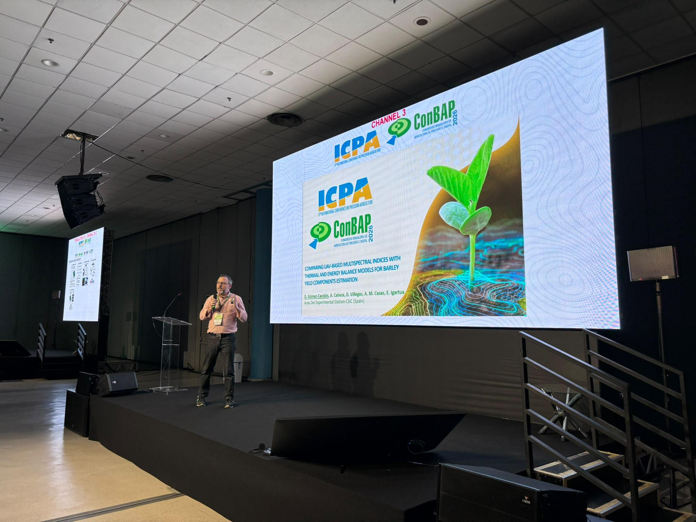

DIVULGACIÓN CIENTÍFICA
Ciencia para todos
Vídeos, conferencias y demostraciones sobre agricultura de precisión, sensores remotos, drones, inteligencia artificial y nuevas tecnologías aplicadas a la agricultura.